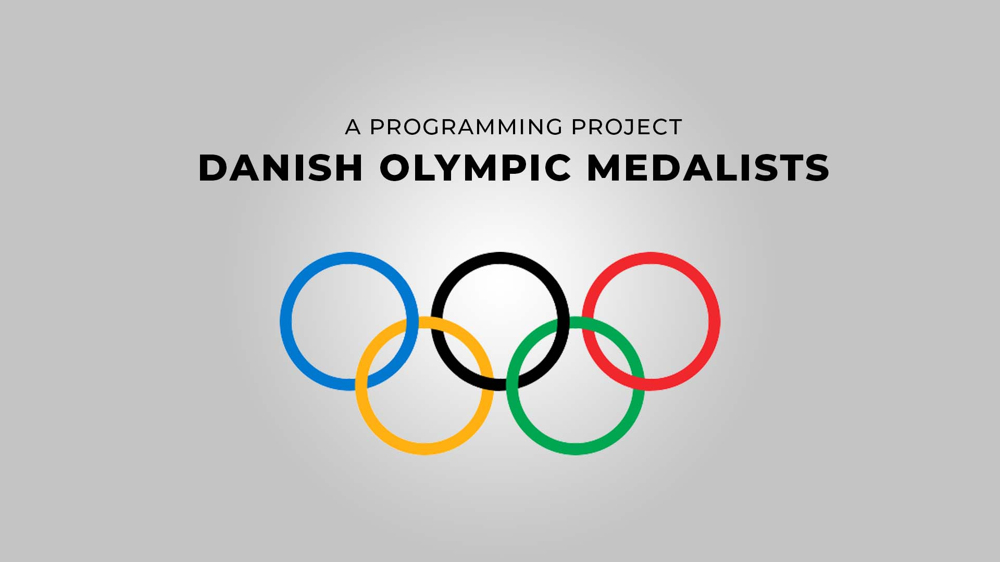

Bachelorprojekt
Sammenhængen mellem florid i drikkevand og fødselsudfald.
Datanalyse
Stata

1. semester programmeringsprojekt
Danske Olympiske Medaljevindere
Python
Scraping
Parsing
Pandas
Dashboard
Datanalyse
Stata
Python
Scraping
Parsing
Pandas
Dashboard
Jeg studerer Data Science ved Syddansk Universitet, hvor jeg arbejder med programmeringssprog som Python og R. Jeg har en bachelor i Folkesundhedsvidenskab - også fra Syddansk Universitet.
Sideløbende med mit studie arbejder jeg som studentermedhjælper ved Innovation, Forskning og MTV på Odense Universitetshospital (OUH), hvor jeg er med til at understøtte PRO-arbejdet.
Jeg er også grøn pigespejder, og i de sidste mange år har jeg haft forskellige virker: jeg har indgået i regionsledelsen samt den "daglige" drift af de ugentlige spejdermøder i en lokal gruppe.